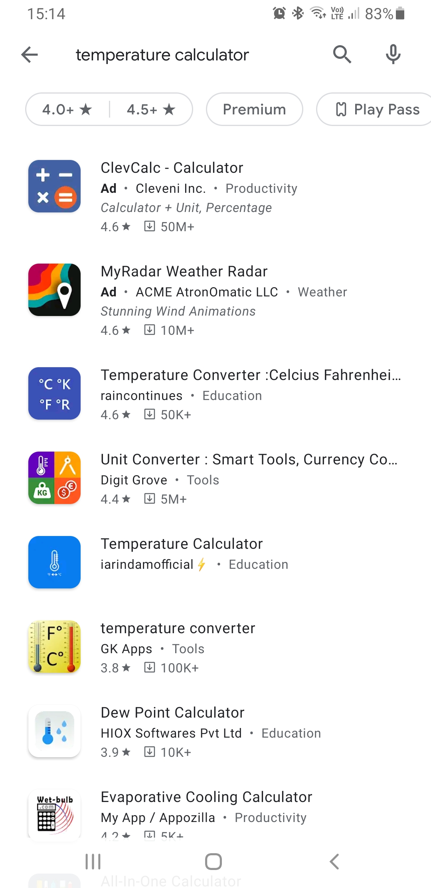
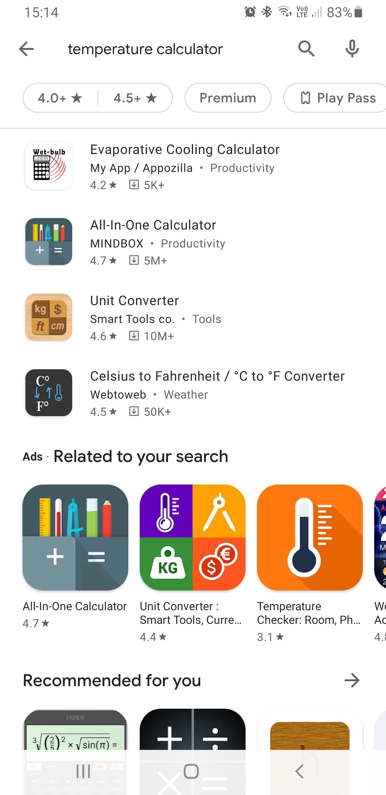
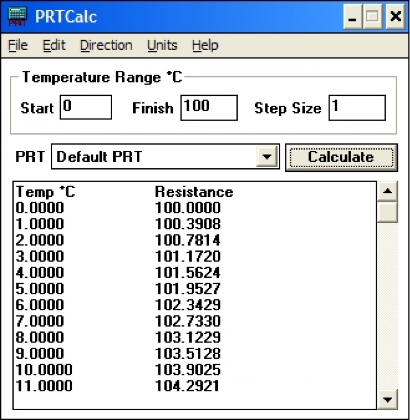

ASSESMENT TASK 3
Team Project
 |
 |
 |
 |
 |
|---|
| |
|
|
|
|
|---|
Broadly speaking, the project is to design and develop a calculator phone application. Unlike a traditional calculator, one that has been available on mobile phones since the early inception of mobile communications, the app will have a very specific, set function and set formula. the aim of the app will be to enable a user to input a numerical value, which results in the output of a different numerical value processed by said formula. To focus the project, the aim is to mathematically convert a temperature sensor signal value (electrical resistance) to its corresponding temperature value in either Kelvin, degrees Celsius, or degrees Fahrenheit based on the International Temperature Scale of 1990 (ITS-90), and the equation and coefficients outlined in IEC60751:2008.
Preston-Thomas, H. (1989). The International Temperature Scale of 1990 (ITS-90). [online]. p. 8. Available at: https://www.nist.gov/system/files/documents/pml/div685/grp01/ITS-90_metrologia.pdf [accessed 20 June. 2021]
International Electromechanical Commission. (2008). IEC 60751:2008 – Industrial platinum resistance thermometers and platinum temperature sensors. [online] edition 2.0. p. 41. Available at https://webstore.iec.ch/publication/3400. [accessed 20 June. 2021]
The user would type in their measured resistance value into the app, and the app would mathematically convert this resistance value into a meaningful temperature, displaying the result on the smartphone screen. Secondary to this, it would be beneficial to include a function that determined whether the resulting value falls within appropriate tolerances, as defined by IEC 60751:2008. It is one thing to be able to make meaning of the measured signal, but another thing to be able to make an educated decision based on the result.
Temperature has been described as the most measured physical quantity. Temperature is related to all other physical properties. i.e., the pressure in a vessel changes depending on temperature. The length of an object changes depending on temperature. The humidity in a chamber changes depending on the temperature. It is so important to measure correctly, and make meaning of the measurements to make the right decision.
We can immediately visualise circumstances where this app can be applied. Consider the mining, oil, and gas industry, or really any high-risk vs. high reward industry. If a sensor is unknowingly outside allowable tolerances, the resulting product, be it refined fuel, clean natural gas, or high-grade coal, may be sub-par or completely useless resulting in millions of dollars of losses and waste. This is not to mention the safety concerns of highly dangerous, hazardous environments and non-functioning equipment.
We can visualise really niche uses for this application too. As an example, the average artificial incubation temperature for snake eggs is between 25.5°C and 28.9°C. Only a few tenths of a degree of error can mean the difference between fully developed snakes, stunted growth, or even death. Because snakes fetch reasonably high prices and require commitment of up to 60 days of incubation, this industry is considered high-risk vs. high-reward, and there have been instances where the manufacturer of what turned out to be a faulty sensor was threatened with a civil lawsuit. Had the equipment been determined suitable for use, perhaps the snakes would not have passed, and financial damage including litigation could have been avoided altogether.
It is true that it’s important to measure correctly, and the application fits in well with modern IT trends. Almost everyone has a smartphone, and almost nobody has time. In this way it is justified to make an application available on a platform that everyone uses, and make an application that calculates a specific formula without the user having to find the information, or do it themselves.
Further, this is an application we can be proud of. It is niche. It’s not a gimmick. We are conscious and aware of its use for not only industrial applications, but private applications. Should a potential employer become aware of our involvement in this project, we would not be embarrassed as it proves not only our technical abilities, but also our aptitude to step outside our comfort zone and consider a scientific world that many take for granted.
Temperature measurement is not new. British Physicist Hugh Longbourne Callendar introduced the first iteration of a platinum resistance thermometer equation, which was accepted as international standard in 1899. In 1925, American Chemist Milton S. van Dusen developed and published a third order term and improved Callendars calculation, thus becoming the Callendar-Van Dusen equation. This is the equation we still use today to define the relationship between the electrical resistance of a platinum thermometer and temperature, and we still refer to the specific coefficients outlined in our equation as Calendar-Van Dusen coefficients (CvD).
Price, Rodney. (1959). The Platinum Resistance Thermometer – A Review of its Contsruction and Applications. [online]. Available at: https://www.technology.matthey.com/article/3/3/78-87/ [accessed 15 August 2021]
Van Dusen, M.V. (1925). Platinum-resistance Thermometry at Low Temperatures. [online]. Available at: https://www.scopus.com/record/display.uri?eid=2-s2.0-0039040724&origin=inward&txGid=b6216af2332dfb94af5ebd65965c1efd [accessed 15 August 2021]
Frankly, this means absolutely nothing to almost all users of temperature measuring equipment. They don’t care how the relationship between resistance and temperature works, they just want the value. There is a plethora of resources available like the above scientific journals, but regrettably there are few resources for non-metrologists when it comes to converting a sensor signal and applying that measurement to an accuracy tolerance. It’s a demanding field to be exposed to requiring many years of hands-on experience, training, and study.
It was an interesting task to try to ascertain the landscape. We have one team member as the metrological expert who could identify where and what was similar, but the team felt it more important to get a layman’s opinion on what was out there. Primarily, they would be in a similar situation to the average user. They did not know of key words to search for, and they understandably did not know the name of the equation. As an example, we searched ‘temperature calculator’ on the google play store. As we can see below, we are presented with a few results, most of which are simply unit converters, from °C to °F or USD to AUD. There is nothing helpful here that matches what we’re doing.
|  |  |

This sounds pretty similar to what we’re trying to achieve, but it differs entirely in that it is only windows based, is behind a marketing subscription wall, and conforms to IEC 751 1995, not IEC60751:2008 which is the most current international standard. Most importantly, it also does not outline any sort of accuracy tolerances based on this standard. Due to these facts, we are satisfied in our assessment that our project is dissimilar enough, nor is it broadly available enough, to justify its necessity. It also looks seriously dated.